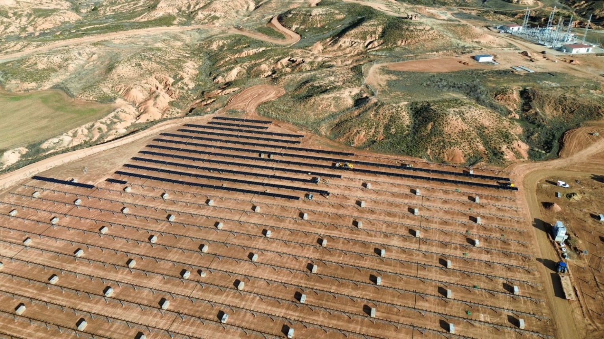

Ejecución Industrial con Equipos Desplazados
Montaje mecánico industrial, estructuras metálicas e intralogística. Operativa en España y Unión Europea con ritmos de obra y disciplina.

Montaje mecánico industrial, estructuras metálicas e intralogística. Operativa en España y Unión Europea con ritmos de obra y disciplina.
Sinera Montajes Industriales es una empresa B2B especializada en montaje mecánico industrial, estructuras metálicas e intralogística. No ingeniería. No diseño. Solo ejecución fiable, ordenada y dentro de plazo.

Trackers, mesas en suelo y montaje mecánico en cubierta.
Estructuras metálicas, ensamblajes y soportes de proceso.

Estanterías, pasillos, protecciones y reconfiguración de almacén.
Operativa en España, UE y desplazamientos internacionales según acuerdo.
Contactar ahora